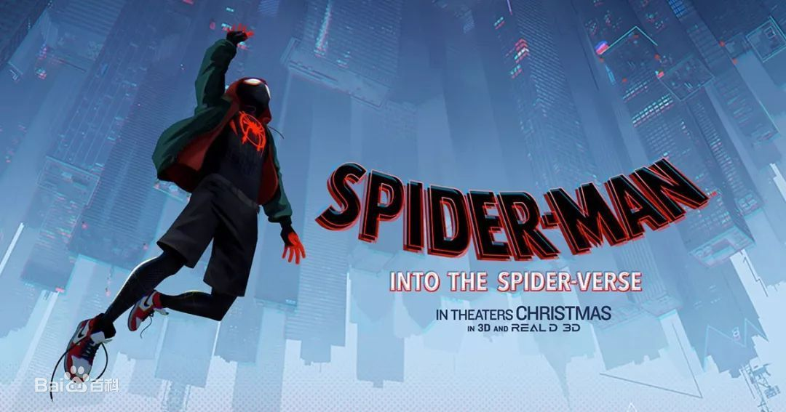

| 英雄联盟 | |
|
l雷神简介:
彼得·帕克（Peter Parker）即蜘蛛侠（Spider-Man），是美国漫威漫画旗下超级英雄，由编剧斯坦·李和画家史蒂夫·迪特科联合创造，初次登场于《惊奇幻想》（Amazing Fantasy）第15期（1962年8月），因为广受欢迎，几个月后，便开始拥有以自己为主角的单行本漫画。 蜘蛛侠全名彼得·本杰明·帕克（Peter Benjamin Parker），是美国的一名普通学生，毕业后成为《号角日报》的记者。由于意外被一只受过放射性感染的蜘蛛咬伤，因此获得了和蜘蛛一样的超能力、超人般的耐力、反应、敏捷和速度。并发明了蛛网发射器，从此化身蜘蛛侠（Spider-Man）守卫纽约。  |
|
| 出自STL英雄简介 | |